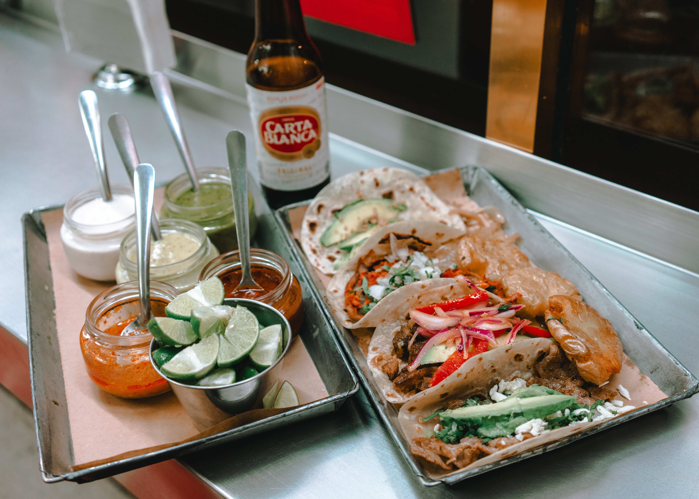

Juan, un joven mexicano, descubrió su pasión por la cocina y decidió abrir su propio restaurante de tacos en un pequeño local en el centro de la ciudad. A medida que ganaba popularidad, expandió su negocio por todo el país sin comprometer la calidad y autenticidad de sus comidas. Hoy en día, el restaurante de tacos de Juan es famoso en todo el mundo por su comida excepcional y auténtica, siendo administrado por la familia de Juan con la misma pasión y atención al detalle que cuando abrieron su primer restaurante hace décadas.

Nuestra misión en el restaurante de tacos es ofrecer a nuestros clientes la experiencia culinaria más auténtica y deliciosa de la comida mexicana, utilizando solo los ingredientes más frescos y de alta calidad. Queremos crear un ambiente cálido y acogedor donde nuestros clientes se sientan como en casa y disfruten de una comida satisfactoria y memorable.
Nuestra visión es ser el restaurante de tacos más reconocido y preferido en nuestra ciudad, conocido por nuestra calidad de comida excepcional, atención al cliente impecable y un ambiente vibrante y acogedor. Queremos convertirnos en un destino gastronómico para los amantes de la comida mexicana y seguir expandiendo nuestra marca para compartir nuestra pasión por la cocina auténtica de México con todo el mundo.

Contactanos el Facebook, Twitter o Instagram.